- N(0,1) に標準化
変数 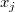 は次のように標準化されます。 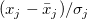 、そして/math-9a256199940d00c2536a5816e8562a68.png "\bar{x}_j\") と 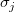 はこの変数の平均と標準偏差を表しています。標準化変数は平均０と標準偏差１になります。
と 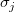 はこの変数の平均と標準偏差を表しています。標準化変数は平均０と標準偏差１になります。 - (0,1) に標準化
変数 は次のように正規化されます。 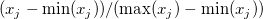 .変数は0から1の間で標準化されます。
内容 |
階層的クラスター分析は階層樹を作るのに使用されます。それぞれが一つのオブジェクトを持ったｎ個のクラスターから始まります。まずは2つのクラスターを１つに統合してより大きなクラスターを最終的に１つの大きなクラスターになるまで行います。このプロセスは樹形図で見ることができます。
階層的クラスター分析でクラスターに分類されるオブジェクトは観測データでも変数でも可能です。
距離または不同性行列は、対称行列にゼロ斜線要素を追加した行列です。ij 番目の要素が、i 番目とj 番目のオブジェクト間がどれだけ離れてる、または似ていないかを表しています。2つのオブジェクト間で距離を計算する方法はクラスター観測とクラスター変数で違ってきます。
Originはクラスター観測に関して、距離を計算する前にまず正規化を行います。欠損値がある観測データは分析から除外されます。
と 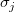 はこの変数の平均と標準偏差を表しています。標準化変数は平均０と標準偏差１になります。Originは３つの距離タイプをサポートします。
/math-b9b1c3b4992cc70b4946348c159f37e6.png "d_{ik}=1-\frac{\sum_{j=1}^p x_{ij}x_{kj}}{\sqrt{\sum_{j=1}^p x_{ij}^2}\sqrt{\sum_{j=1}^p x_{kj}^2}}")
/math-36d3bef9314267d27776738195752c04.png "d_{ik}=1-\frac{\sum_{j=1}^p (x_{ij}- \bar x_i)(x_{kj}- \bar x_k)}{\sqrt{\sum_{j=1}^p (x_{ij}- \bar x_i)^2}\sqrt{\sum_{j=1}^p (x_{kj}- \bar x_k)^2}}")
/math-c8ba27ae461ab7e05dfd221d6f617dfe.png "d_{ik}=\frac{\sum_{j=1}^p ( (x_{ij} \ne x_{kj}) \bigcap (x_{ij} \ne 0 \bigcup x_{kj} \ne 0) ) ? 1:0 }{\sum_{j=1}^p (x_{ij} \ne 0 \bigcup x_{kj} \ne 0) ) ? 1:0}")
Originはクラスター変数で2つの距離タイプをサポートしています。観測値は共分散や係数を計算する２つの変数のうち、どちらか一方に欠損値がある場合は除かれます。
各ステージで、最も近しい2つのクラスターは統合されます。Originはいくつかの手法を用いて新規クラスターと他のクラスター間の距離を計算しています。クラスターｊとｋを統合してクラスターjkとします。/math-4977ea7b014aa7a99a12a7a0c45b76f6.png "n_i\") 、
、 /math-f898efd8ac64b6621a2aeed350ce3164.png "n_j\") 、
、 /math-fd91d2523217931bfcd6f684555f4d7f.png "n_k\") を順にクラスターi、クラスターｊそしてクラスターｋのオブジェクト数とし、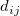、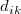、 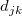 を2つのクラスター間の距離とします。するとクラスターjkとクラスターi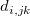 の距離 は次のように計算されます。
を順にクラスターi、クラスターｊそしてクラスターｋのオブジェクト数とし、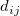、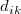、 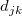 を2つのクラスター間の距離とします。するとクラスターjkとクラスターi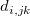 の距離 は次のように計算されます。
/math-a1e87a55511ee73bf5adfe0699ff3114.png "d_{i,jk}=\frac{n_j}{n_j+n_k}d_{ij}+\frac{n_k}{n_j+n_k}d_{ik}-\frac{n_jn_k}{(n_j+n_k)^2}d_{jk}\")
/math-ebce4775175a80790a9f3ce946072790.png "d_{i,jk}=\frac{(n_i+n_j)d_{ij}+(n_i+n_k)d_{ik}-n_id_{jk}}{n_i+n_j+n_k}\")
クラスターｊとｋで j<k の場合、統合された新しいクラスターはクラスター段階表でクラスターｊとして表記されます。
樹形図は階層的な木のような図で、どの距離で2つのクラスターが統合するのかを表示しています。各段階は１つのユニットとして樹形図では示されています。各段階で一番上にあるユニットは2つのクラスターを統合したものを示しています。その高さは2つの統合したクラスター間の距離を示しています。
樹形図の終点はn個のオブジェクトを表しています。樹形図内のｎ個のオブジェクトは統合されたクラスターが隣り合うようにソートされています。樹形図の最初の終点は常に初めのオブジェクトを表しています。
特定されたｋクラスターのn個のプロジェクトは樹形図またはクラスター段階の情報によって判別できます。ｋクラスターはn-k番目の段階にあり、これは各オブジェクトの所属は初めのn-k段階で知ることができます。そしてオブジェクト１は常にクラスター1に所属しています。
クラスター中心と観測データおよびクラスター間の距離はクラスター観測データのために計算されます。もし正規化が分析内で選択されていた場合、観測データは計算の中で正規化されます。